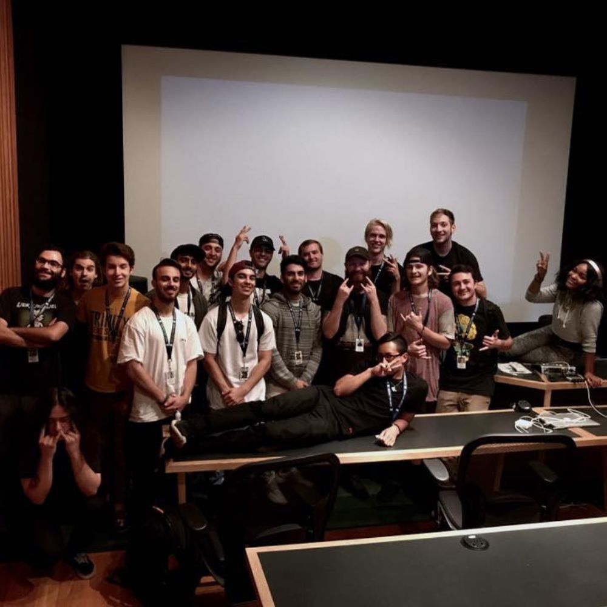
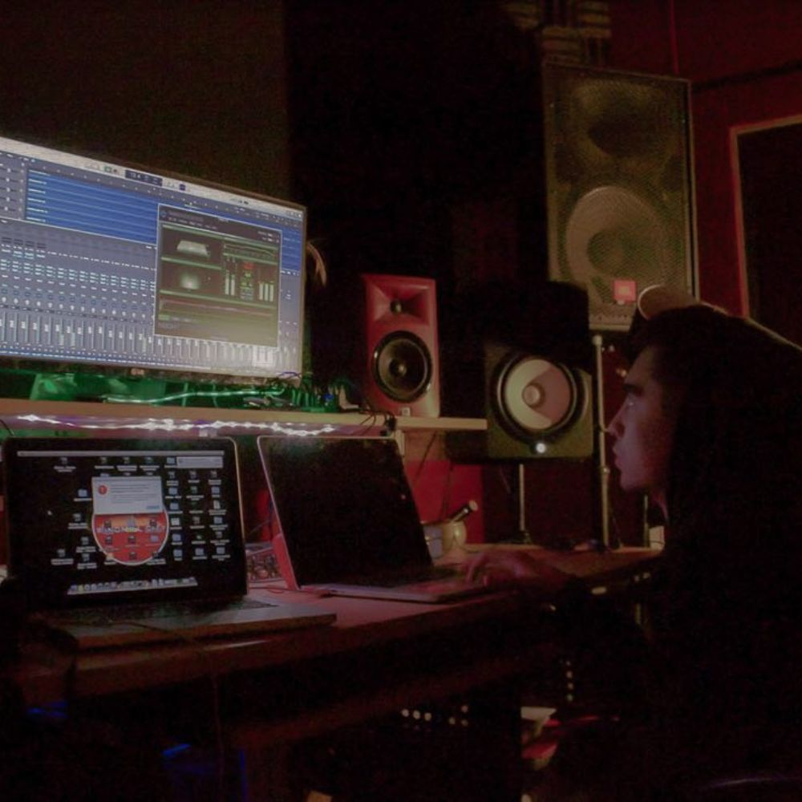
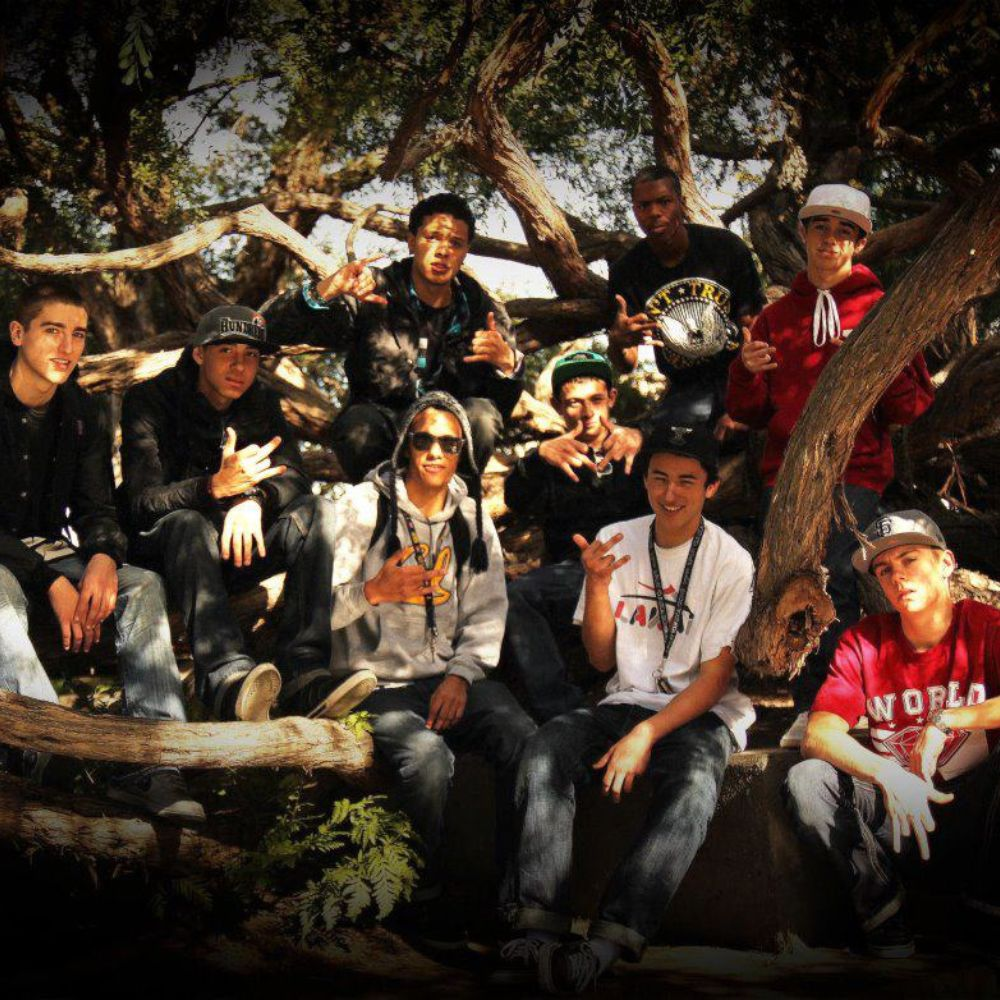

Last update: 3/18/2026
About Me
I'm a builder at heart. I enjoy turning ideas into real projects whether that's businesses, music, or things I'm learning to code.
I’m drawn to experimentation, learning new skills, and figuring out how things work. The process of building, improving, and trying again is what motivates me.
You'll usually find me happiest when I'm working on a project, producing music, training in the gym, or exploring something new I'm curious about.
I'm Clayton and this website is where I share what I'm building and learning.

Projects
Ecommerce Stores
I build and experiment with ecommerce businesses, diving into product research, branding, and digital marketing. I’m passionate about understanding what makes products succeed and how online businesses scale efficiently.
Since 2020, I’ve been creating Shopify stores and loving every step of the journey. From branding and marketing to legal, analytics, SEO, and social media strategy, I’m fascinated by every aspect of running a successful online business.
Check out my current ecommerce project: Prime Wine Coolers Website
Building This Website
This website is a personal experiment in learning to code and exploring how AI can be used as a tool to build and create faster.
Things I'm Learning
- Ecommerce & digital marketing
- Sales and persuasion
- Music production & mixing
- Fitness, health, and nutrition
- Coding & technology
Music
I've been producing music for over 10 years, primarily focusing on lo-fi hip-hop and electronic genres. Over the years I've developed a strong passion for sound design, composition, and the technical side of music production. I'm currently focused on continuing to improve my mixing, sound design, and overall production quality.
In 2017, I graduated from Icon Collective College of Music in Burbank, California with a certificate in music production. My time there helped deepen my understanding of music theory, arrangement, and modern production techniques. From 2018 to 2020, I worked in live audio at Bankhead Theater in Livermore, California, where I gained hands-on experience working with professional sound systems and live performances. During that time, I also co-ran Windmill Studio in Livermore with Brandon Rios, where we worked with local artists on recording, production, and mixing projects.

Original Tracks
Dreambound
Wondering
Sesh
Time Off
Listen to more music projects here: Clay2k & afkzzz
Collaborations
Song: Twin Peaks
Artist: Brandon Rios (Producer / Writer) (@brandonl0ve)
Director: Sooraj Saxena (@soorajsaxena)
Role: Producer / Mix / Master / Recording
Jarvis Neely
MBL Records

Hvze
DQ
Ideas & Thoughts
This section will be used to document ideas, experiments, and lessons learned while building businesses and learning new skills.